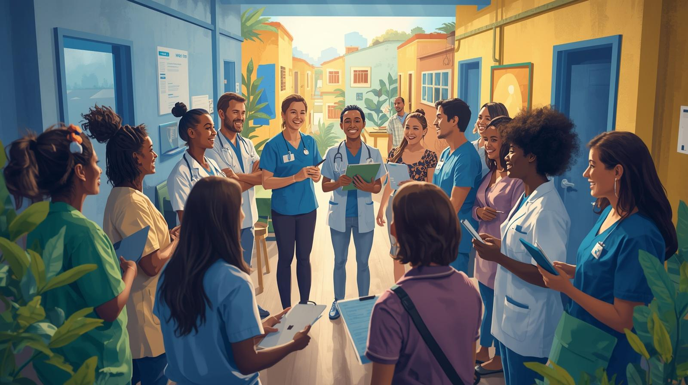

Boas-vindas!
Ao longo dos módulos anteriores, refletimos sobre o conceito de equidade em saúde, discutimos as interseccionalidades e analisamos os desafios concretos do trabalho na Atenção Primária à Saúde.
Agora, chegamos a uma pergunta fundamental: o que pode ser transformado, na prática, no cotidiano dos serviços de saúde?
Neste módulo, vamos apresentar quatro caminhos possíveis para promover equidade na Atenção Primária à Saúde: a Educação Permanente; as práticas interprofissionais; a integração ensino-serviço-comunidade; e a produção de conhecimento.

Vídeo Aula
O que pode ser transformado no cotidiano dos serviços de saúde?Mapa Mental
Síntese visual dos caminhos possíveis.
Infográfico
Os 4 caminhos da equidade na prática.
Podcast
Ouça nosso roteiro em áudio! Neste episódio, detalhamos como a Educação Permanente, as práticas interprofissionais e a integração com o território ajudam a construir um cuidado em conjunto no SUS.
Reflexão
"A equidade como prática cotidiana..."
Compromisso
"Promover equidade é um compromisso coletivo que se constrói no cotidiano, todos os dias no SUS."
Avaliação Final
Venha testar seu aprendizado!
ACESSAR FORMULÁRIO 📝Referências Bibliográficas
1. Sousa, A. S.; Santos, R. I. F. A Educação em Saúde na promoção do empoderamento comunitário: uma revisão integrativa da atuação multiprofissional. [Acessar]
2. Nogueira, R. S. Integrality in care: from Primary Health Care to Specialty. [Acessar]
3. Prichula, F. F. et al. Equidade e diversidade: entendimento de profissionais do SUS. [Acessar]
2. Nogueira, R. S. Integrality in care: from Primary Health Care to Specialty. [Acessar]
3. Prichula, F. F. et al. Equidade e diversidade: entendimento de profissionais do SUS. [Acessar]
4. Constituição Federal de 1988 – Art. 196 a 200
5. Lei Orgânica da Saúde – Lei nº 8.080/1990
6. Política Nacional de Atenção Básica (PNAB)
Créditos
- Organização: Beatrice Caiula
- Curso: Medicina / UFSC
- Realização: Grupo PET 1
- Parceria: UFSC, UDESC e Prefeitura Municipal de Florianópolis/SC